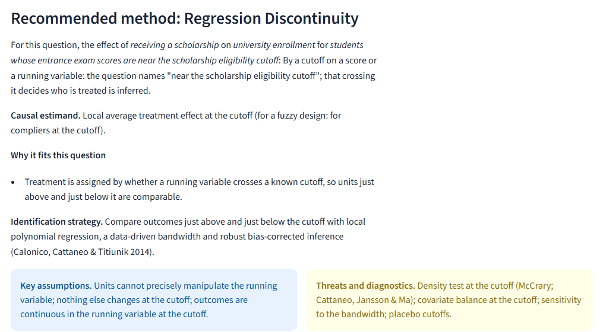
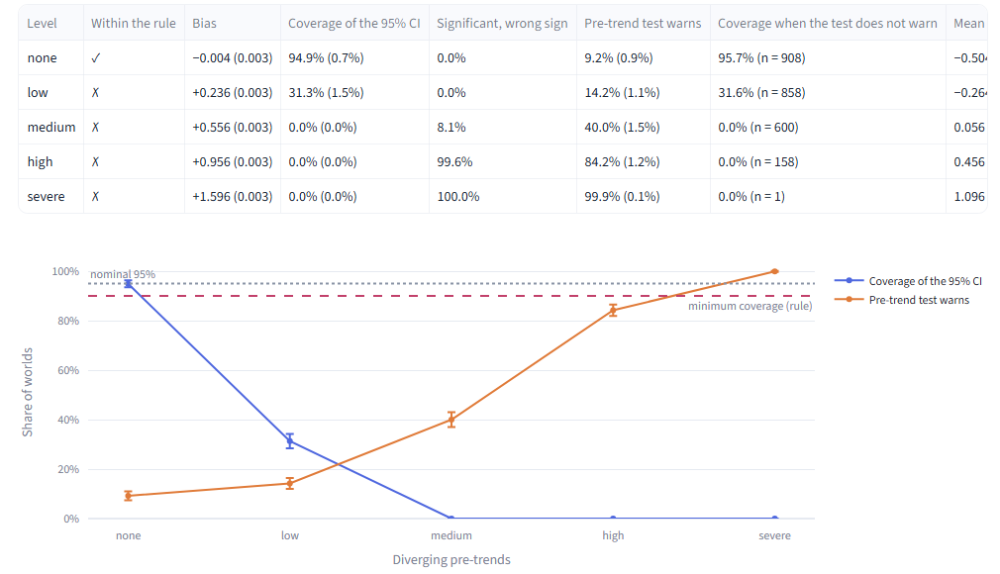

It reads your question first.
Type Is smoking associated with lung cancer? Causal Lab says the question is unclear, marks smoking and lung cancer “to confirm”, and asks whether you want a causal effect. It does not pick a method until it knows what you want to know.
How well the question reader doesOn frozen sets of published titles: precision 0.95 and recall 0.60 (fails its 0.70 target) on set 2; 1.00 and 0.83 on set 3, where version 2 scores 0.80; 0.96 and 0.86 on set 4, where version 2 scores 0.79. All four evaluations.

It picks a method only once you confirm.
Ask What is the causal effect of receiving a scholarship on university enrollment among students whose entrance exam scores are near the scholarship eligibility cutoff? It reads a causal effect, quotes the treatment and the outcome, and labels the cutoff as an inference, not a fact. Once you confirm the form, it recommends regression discontinuity and says why difference-in-differences would estimate something else.
- Stated: “the causal effect of receiving a scholarship on university enrollment”.
- Inferred from “near the scholarship eligibility cutoff”, and asked back to you.
- Before this, no method is recommended.
- A local effect at the cutoff. Difference-in-differences would estimate a different quantity (the ATT).


Difference-in-differences can fail while its test stays quiet.
Difference-in-differences on 1,000 simulated worlds with a known effect of −0.50. With low diverging pre-trends, the estimate is off, on average, by 47% of the true effect (bias +0.236), and the 95% interval covers the truth in only 31.3% of all 1,000 worlds. The usual pre-trend test warns in just 14.2% of them. This is a known problem (Roth, 2022); Causal Lab lets you watch it happen.
Figure 1. Diverging pre-trends, low level, 1,000 simulated worlds.
Effect size: bar length is the size relative to the true effect
Worlds: bar length is a share of worlds
Both groups are drawn to scale: the first against the true effect; in the second, the top bar against all 1,000 worlds and the bottom bar against the 858 quiet ones (31.6% of them cover the truth; over all 1,000 worlds, 31.3% do). The average estimate is the mean of the 1,000 estimates. Source: the stored study, DEMO_DETAILS.md and results.json.


The full study: four threats, five levels each.
Each threat is varied alone, from none to severe, on 1,000 worlds per level. Difference-in-differences passes only where the blue dot sits above the 90% line and the bias stays within 10% of the true effect. Diverging pre-trends break it first, and at the level where it breaks the test is still mostly quiet.
Figure 2. Coverage of the 95% interval and how often the pre-trend test warns, by threat and level. 1,000 worlds per point.
Red points fail the rule set in advance (bias over 10% of the true effect, or coverage under 90%), including anticipation at the high level, whose coverage (91.5%) meets the rule but whose bias (11% of the true effect) does not. In the staggered design the true effect grows with the level, and the bias is judged against it. Drawn from results.json with the app's own summary code.
Table 1. Bias as a share of the true effect (top) and coverage of the 95% interval (below), per threat and level. Green: rule met; red: rule failed, with the failing value in red.
| Threat | None | Low | Medium | High | Severe |
|---|---|---|---|---|---|
| Diverging pre-trends | 1%94.9% | 47%31.3% | 111%0.0% | 191%0.0% | 319%0.0% |
| Confounding | 1%94.9% | 2%95.4% | 8%92.2% | 21%82.3% | 47%46.5% |
| Staggered adoption, growing effects | 1%95.6% | 3%95.1% | 5%94.0% | 6%91.9% | 7%87.6% |
| Anticipation | 1%94.9% | 2%95.3% | 6%93.7% | 11%91.5% | 19%83.0% |
Eight designs, each with what it rests on.
A design is considered only if its conditions hold. Those that do are put in an argued order, with no numerical score: no design is better in every research context.
Table 2. The designs in the recommendation. From the README, derived from causal_engine/recommendation.py.
| Design | Needs | Rests on | Estimator |
|---|---|---|---|
| Randomised trial | Random assignment | Randomisation carried out as described | Yes |
| Regression discontinuity | A real assignment cutoff | Continuity at the cutoff, no precise manipulation | Sharp and fuzzy |
| Difference-in-differences | Treated and untreated, before and after | Parallel trends, untestable | Yes, with the simulation study |
| Event study | As DiD, with at least 2 pre-periods | Parallel trends | Yes |
| Synthetic control | One or a few treated units, donors, at least 5 pre-periods | Fit carries over to the post-period | Yes |
| Instrumental variables | An instrument the researcher can defend | Relevance, exclusion (untestable), monotonicity | Yes |
| Interrupted time series | A long series before and after | Trend continues; nothing else changes then | No: advice only |
| Matching | All important confounders measured | Selection on observables, unverifiable | Yes |
Double machine learning is also estimated in the app. It is not a separate design, so the recommendation does not list it.
In 30 seconds.
How it was checked.
- Tests
The full test suite runs on every push and pull request, with the newest and the oldest supported versions of its dependencies (GitHub Actions).
- The simulation study
Four threats × five levels × 1,000 worlds, every replication stored with its seed. Difference-in-differences is judged acceptable when its bias is at most 10% of the true effect and its 95% interval covers the truth in at least 90% of worlds. That rule was fixed on 2026-10-30, after the pre-trends results were seen and before the three other threats were simulated (details).
- The question reader
-
Four frozen evaluations on 230 published article titles, failures included. It never recommended a method from the question alone. Recall is the share of causal questions it reads as causal (target 0.70); precision is how often it is right when it says causal.
Set Version Precision Recall Version 2, same set 1 (56 titles) 1 0.95 0.64, fails 2 (58 titles) 2 0.95 0.60, fails 3 (58 titles) 3 1.00 0.83 (v2 0.80) 0.80 4 (58 titles) 3.1 0.96 0.86 (v2 0.79) 0.79 Most of the later gain is the set, not the code: version 2 scores 0.80 and 0.79 on the last two sets. The labels come from one rater. All four reports.
What it is not
It helps you choose and understand a design. It does not establish causal identification.
Identification rests on assumptions about the world that data can sometimes refute and never prove. Causal Lab tells you which assumptions your design needs, and shows what happens when they fail.
Cite this project.
Barhame, T. Z. (2026). Causal Lab: A virtual laboratory for causal research [Computer software]. MSc project, Eötvös Loránd University. https://github.com/esst-prog2/CAUSAL-LAB-A-Virtual-Laboratory-for-Causal-Research
@software{barhame_2026_causallab,
author = {Barhame, Thierry Z.},
title = {Causal Lab: A Virtual Laboratory for Causal Research},
year = {2026},
note = {MSc project, E{\"o}tv{\"o}s Lor{\'a}nd University},
url = {https://github.com/esst-prog2/CAUSAL-LAB-A-Virtual-Laboratory-for-Causal-Research}
}